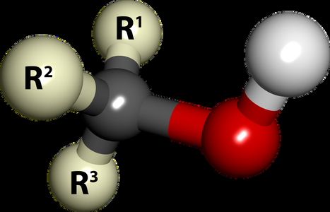
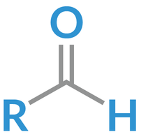

Alcohol
| Vietnamese | Ancol ( ) |
|---|---|
| English | Alcohol |
| Pronunciation | /ˈælkəhɒl/ |
| Word type | noun (as labelled in the PDFs) |
Topic 1 — Meaning (Vietnamese)
Ancol ( )
Meaning (English)
A chemical compound that contains a hydroxyl group (–OH) attached to a carbon atom. (Ancol là hợp chất hữu cơ có chứa nhóm hydroxyl (–OH) liên kết với nguyên tử carbon no.)
Example
Alcohols are organic compounds that contain a hydroxyl group attached to a carbon atom. (Ancol là những hợp chất hữu cơ có chứa một nhóm hydroxyl liên kết với một nguyên tử carbon.)
Images from the PDFs


